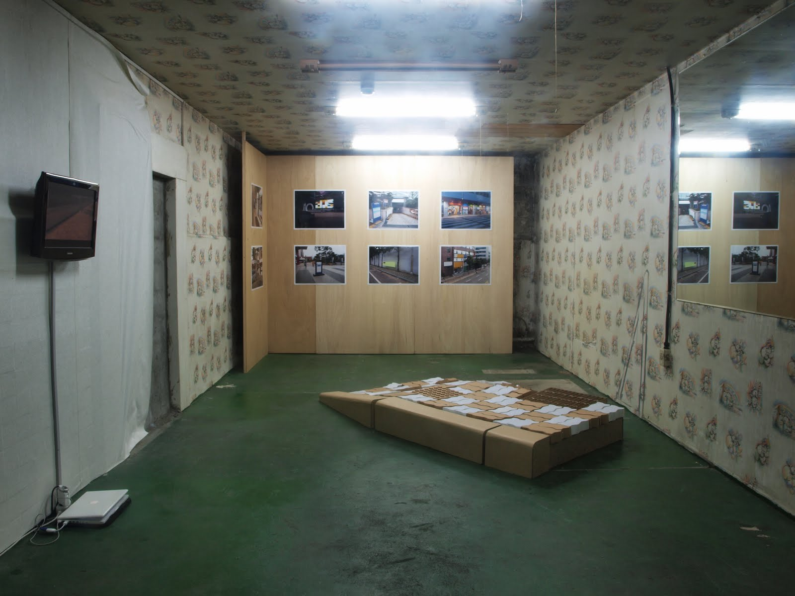
Climax : Landing Kimchi, Landscape
I come from Japan and this is the first time I visit Korea. The Korean urban landscape felt familiar at first, but at the same time uncomfortable. I am interested in this sense of incongruity. In well developed areas, where I find many offices, commercial centers, and residential streets, I began to wonder whether or not this was still Korea. These urban landscapes are similar in Japan, or Europe.
I believe that Korean people would say those places are normal for them, because that is what Korea looks like. However, why do people from other places, such as Japan or Europe feel that the landscape in Korea is familiar? Many places have lost their own historical cultures or character and they are wrapped everywhere in undefined appearances. Thus, I believe that it is because of these undefinable appearances that people have a sense of the familiar. Therefore, if I see these kinds of urban landscapes in Japan, I would also say the same thing. I observe places or urban landscapes in Japan I would also say the same thing. I observe places or urban landscapes that have no reality, borrowed appearances and scenes that could be repeated over and over again. Moreover, I wonder where I am in these unfamiliar, but familiar urban landscapes. I want to approach the scenes or urban landscapes, the usual backgrounds and ambiguity of each place unconsciously made up, and not jus point them out as specific places or urban landscapes.
클라이맥스 : 착륙하는 김치, 풍경들
일본인인 저는 처음으로 한국을 방문했습니다. 처음으로 바라보는 한국의 풍경에서는 친숙함과 위화감이 함께 느껴집니다. 저는 그 점에 흥미를 갖고 있습니다. 사무실이 즐비한 거리, 새로 개발된 주택가와 번화가 등의 비교적 최근에 개발된 곳을 바라볼 때면 저는 이곳이 정말 한국이 맞는지 어리둥절해지곤 했습니다. 그곳들은 일본의 어느 곳 같기도 하고 혹은 유럽이나 미국의 어느 곳 같기도 합니다. 한국인들이 이런 풍경을 본다면 '이미 다 알고있는 한국의 뻔한 풍경'이라고 말할지도 모르겠습니다. 그것은 그 장소들이 이미 한국 어디에서나 볼 수 있는 친숙한 풍경을 가지고 있기 때문입니다. 그런데 그런 장소들이 저와 같은 일본인에게도, 다른 나라의 외국인에게도 친숙하게 느껴지는 것은 어찌된 일일까요?
어떤 장소를 규정하는 풍토나 역사, 민족성같은 것들이 실은 세계 어디서나 볼 수 있는 막연한 껍데기에 의해 포장되고, 사람들은 그 겉모습에서 친숙함을 느끼는 것이 아닐까라고 저는 생각합니다. 따라서 제 나라 일본에서 똑같은 풍경을 본다면 똑같은 이야기를 할 지도 모릅니다. 전혀 리얼리티가 없는, 어디선가 빌려온 듯한 풍경의 겉모습, 앞으로도 되풀이해 반복될 이 풍경 하나하나를 저는 응시할 것입니다. 그래서 저는 익숙하지 않은 장소의 익숙한 풍경 속에서 여기는 어디인가에 대해 생각합니다. 이것은 단순히 어떤 장소를 가리키자는 것이 아니고, 우리의 평범한 일상의 배경이 되는 것들, 세계를 무의식적으로 구성하고 있는 애매한 것들에 접근하고 싶은 것입니다.
seoksuartproject.blogspot.com 에서 옮김
RESUME
作家略歴
1980 福岡県生まれ
2005 武蔵野美術大学造形学部油絵学科卒業
2007 武蔵野美術才学大学院美術専攻版画コース修了
個展
2008 クロマキー 西瓜糖 阿佐ヶ谷
2007 知らない祭 petal fugal 東青梅
2006 西瓜糖 阿佐ヶ谷
2004 同上
同上
グループ展
2008 オープンスタジオ アラカワゾイスタジオ 北千住
ヘイ！カモン間接照明 TAP2008 取手市井野団地
Ongoing FES Art Center Ongoing 吉祥寺
メトロポリスで会いましょう Art Center Ongoing 吉祥寺
2007 三人展 養清堂画廊 銀座
終わりを失う 武蔵野美術大学 修了制作展
ハレーション 武蔵野美術大学 修了制作・優秀作品展
2006 全国大学版画展 町田国際版画美術館（買い上げ賞）
風呂屋劇場 才ノ神浴場 直島
2005 全国大学版画展 町田国際版画美術館（買い上げ賞）
8 Bumpodo Gallery 神田
2004 三時展 Gallery Barco 亀有
展評等
2006 美術手帖12月レビュー欄 成相 肇 選・評
Web PEELER Reviews 藤田 千彩 選・評
収蔵作品 町田国際版画美術館
Profile
1980 Born in Fukuoka, Japan
2005 Graduated from Department of Painting, Musashino Art University
2007 Completed Master of Degree Course of printmaking in Fine Arts, Musashino
Art University
Solo Exhibition
2004 solo exhibition at Suikato, Asagaya
solo exhibition at Suikato, Asagaya
solo exhibition at Suikato, Asagaya
‘Shiranai Matsuri’ at petal fugal, Oume
Chroma Key at Suikato, Asagaya
Group exhibition
‘Sanji ten’ at Gallery Barco, Tokyo
「8」at Bumpodo Gallery, Tokyo
The University of Japan Printing Exhibition, at Machida Printing Museum, Machida (award that the museum buys pieces)
’Furoya Gekijo’ at Sainokami Yokujo, Naoshima
The University of Japan Printing Exhibition, at Machida Printing Museum, Machida (award that the museum buys pieces)
2007 Musashino Art University graduate school Exhibition
(won the highest award)
‘Sannin Ten’ at Yoseido
2008 Metropolis de Aimasho, at Ongoing Art Center, Kichijoji
Ongoing FES at Ongoing Art Center, Kichijoji
Hey!Come on Indirect lighting, TAP2008 ，Toirde
Open Studio, at Arakawazoi Studio
Review
2006 Bijutsu Techo: Dec.2006 review column; selected and reviewed by Hajime
Nariai
Web PEELER Reviews; selected and reviewed by Chisai Fujita
Museum’s collection
Machida International Printing Museum
2009-08-03
sap2009.egloos.com 에서 옮김
flying kimchi
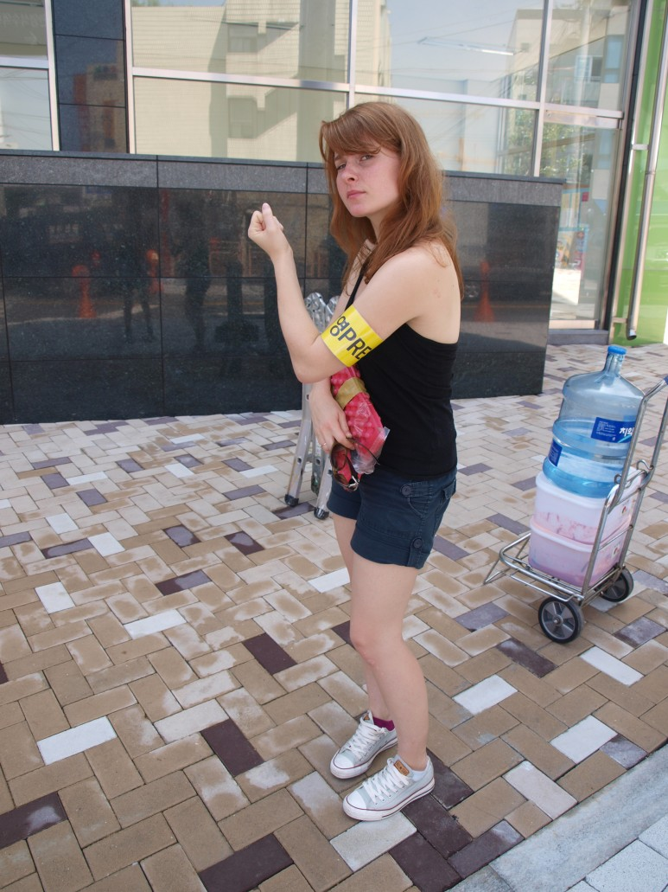 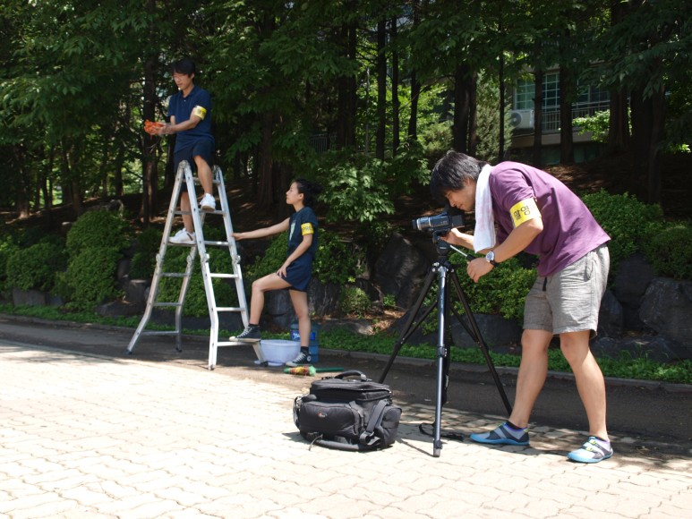 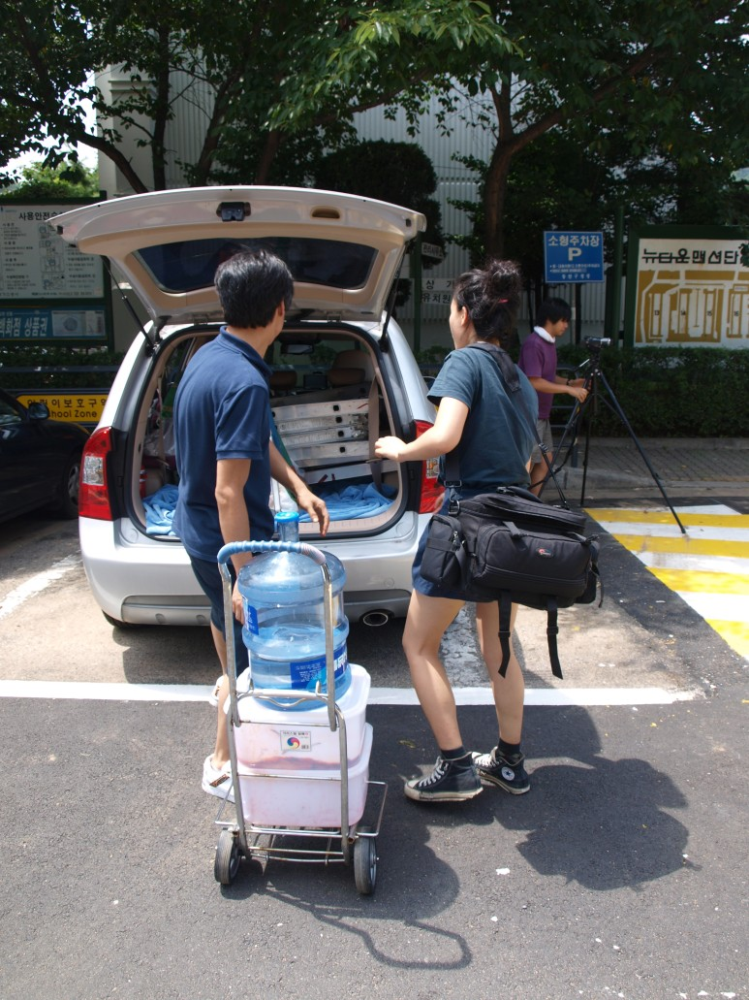 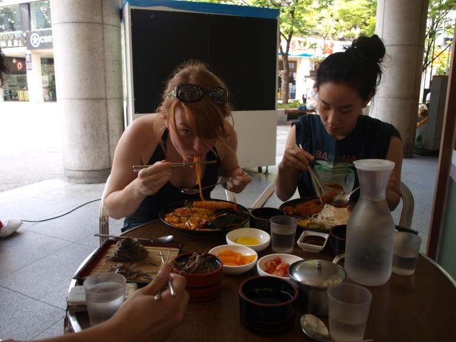 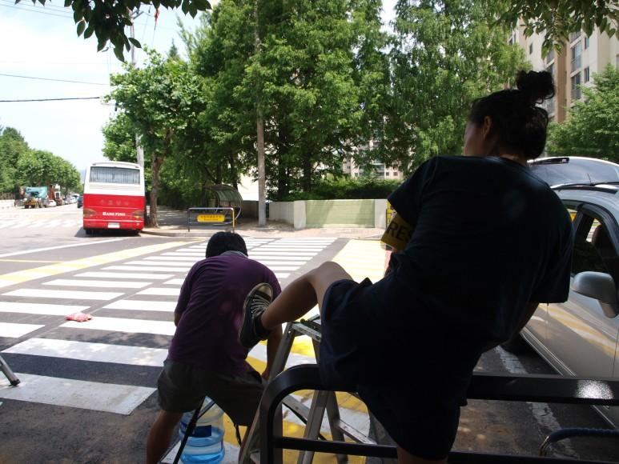 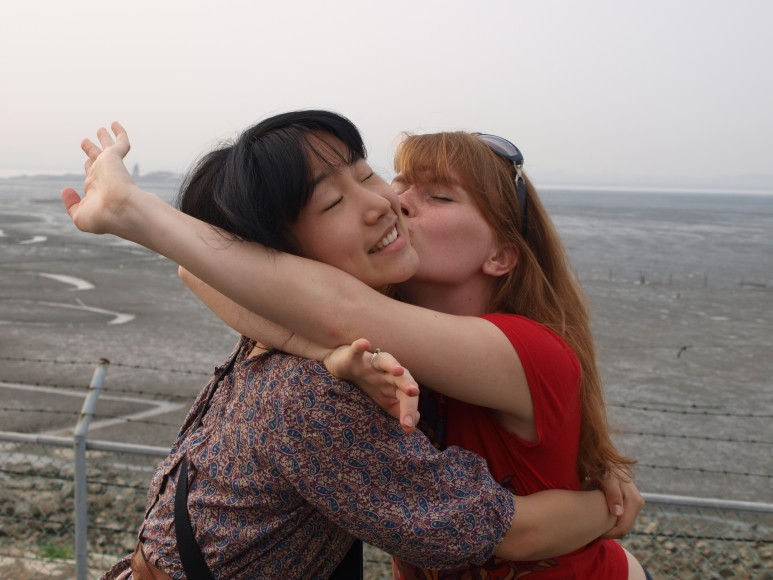 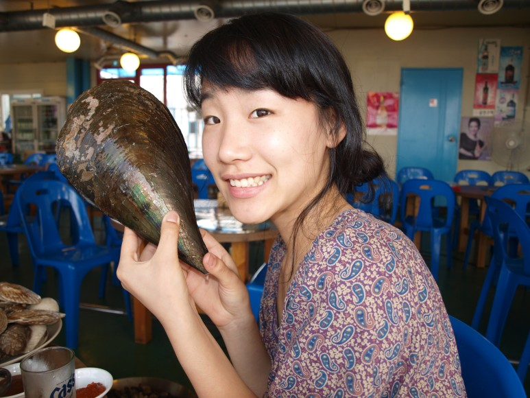 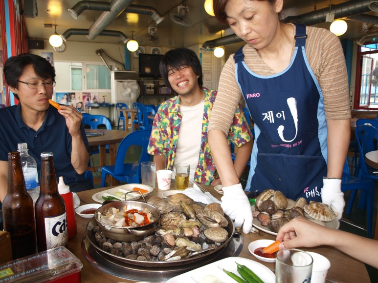 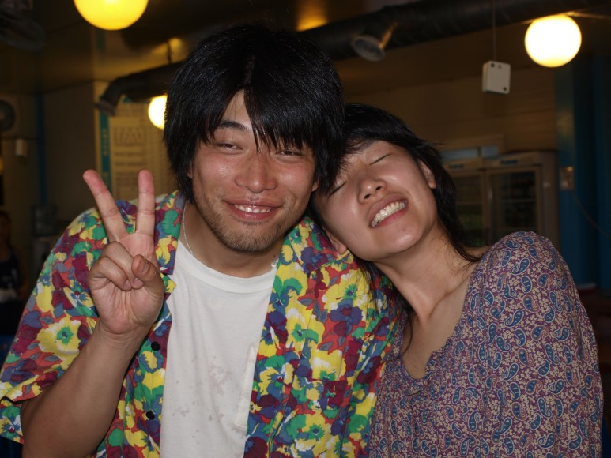 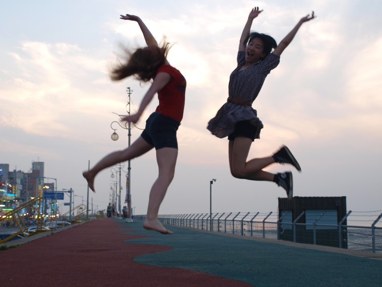 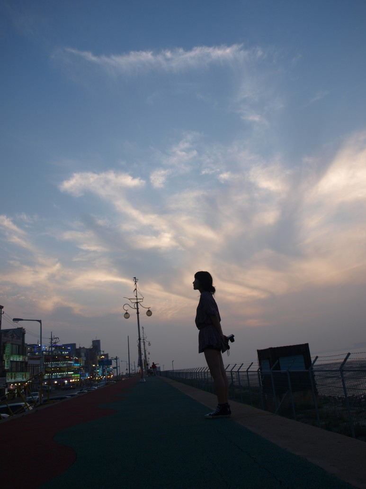 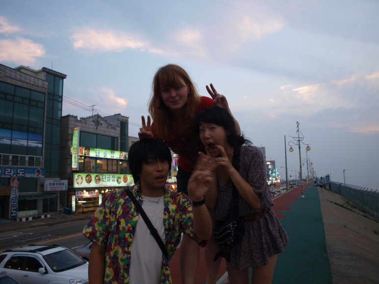 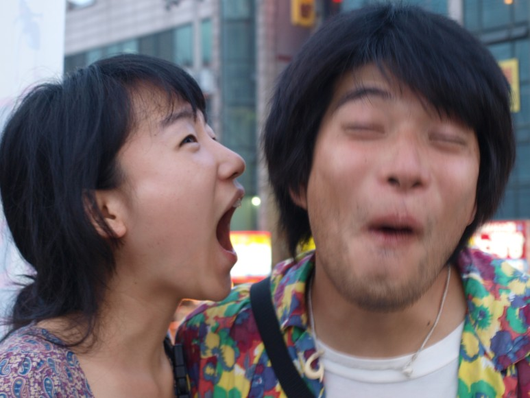 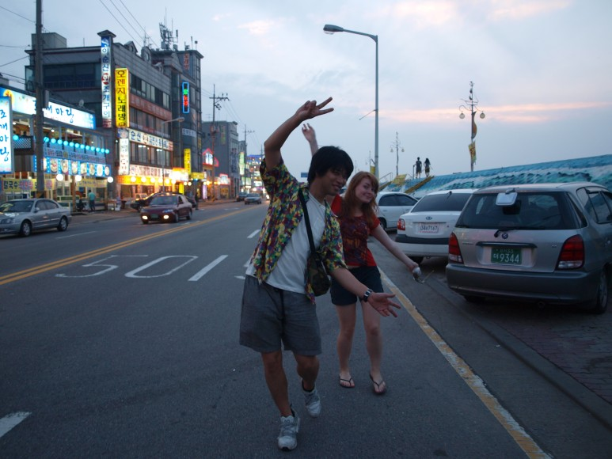
2009-07-20
sap2009.egloos.com 에서 옮김